- 설립
- 2018년
- 사업 영역
- 4개
- 적용 산업
- 6개
- 진행 절차
- 6단계
아래에서 확인하실 수 있습니다
자동차 부품 · 식품 · 전자 부품 · 반도체 장비
문의부터 사후 대응까지
BUSINESS AREAS
사업 영역
현장의 요구에 맞춰 설계부터 납품까지 한 곳에서 진행합니다.
-
01
자동화 설비 설계 · 제작
조립 · 이송 · 포장 공정을 대상으로 전용 설비를 설계하고 제작합니다.
현장 실사 후 견적
-
02
정밀 부품 가공
설비에 들어가는 기구 부품을 직접 가공합니다. 단품과 소량도 받습니다.
도면 기준 견적
-
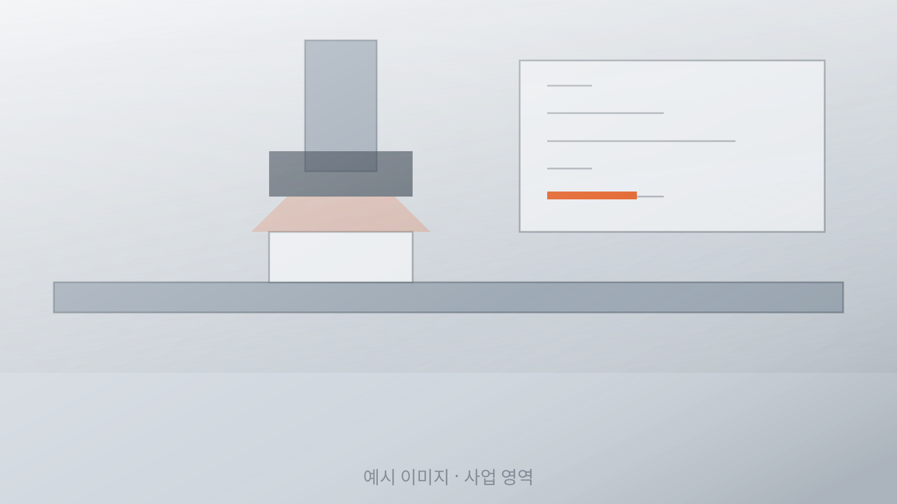
03
비전 검사 시스템
치수 · 외관 · 유무 검사를 카메라로 대신합니다. 기존 라인에 붙이는 방식도 가능합니다.
검사 조건 협의 후 견적
-
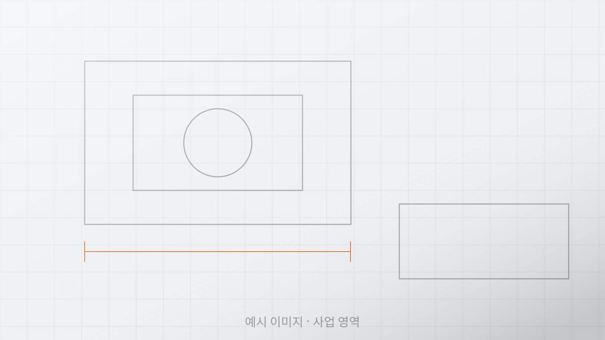
04
설비 유지보수 · 개선
쓰던 설비의 속도와 불량을 손봅니다. 제작사가 달라도 도면을 다시 떠서 진행합니다.
점검 후 견적
CORE CAPABILITIES
핵심 역량
-
01
설계
현장 실사와 공정 분석부터 시작합니다. 도면이 없어도 현재 라인을 측정해 설계에 반영합니다.
-
02
제작
기구 제작과 제어 구성을 자체 수행합니다. 공정이 나뉘지 않아 일정과 책임이 한 곳에 있습니다.
-
03
품질
출하 전 조립 상태로 시운전합니다. 목표 사이클 타임과 검사 조건을 문서로 남기고 보냅니다.
-
04
대응
납품 후 설비 변경과 부품 교체를 이어서 맡습니다. 도면과 제어 소스를 고객사에 함께 드립니다.
PRODUCTS
제품 · 설비
-
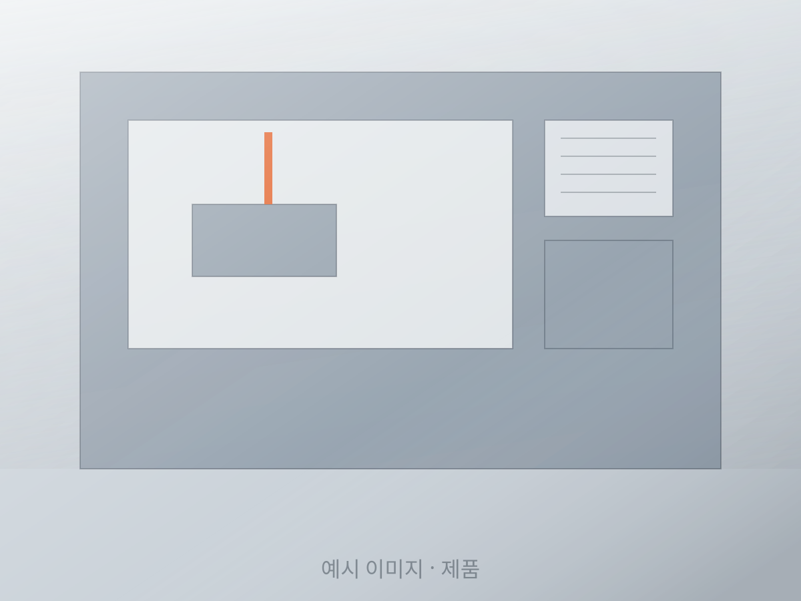
전용 가공 설비
-
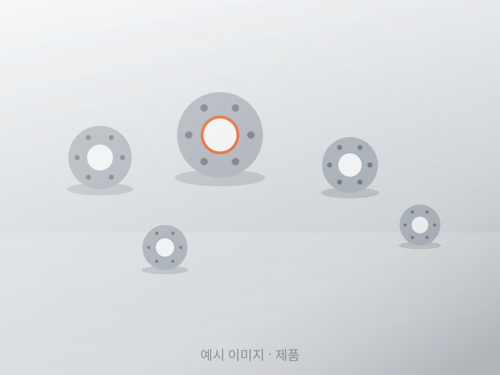
정밀 기구 부품
-
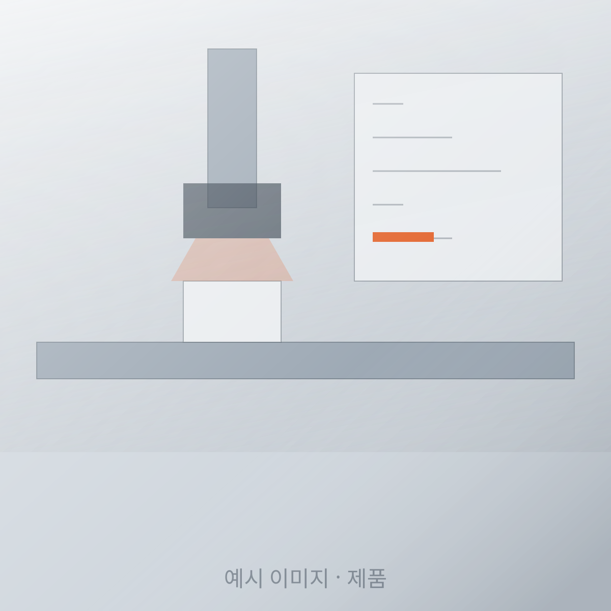
비전 검사 유닛
-
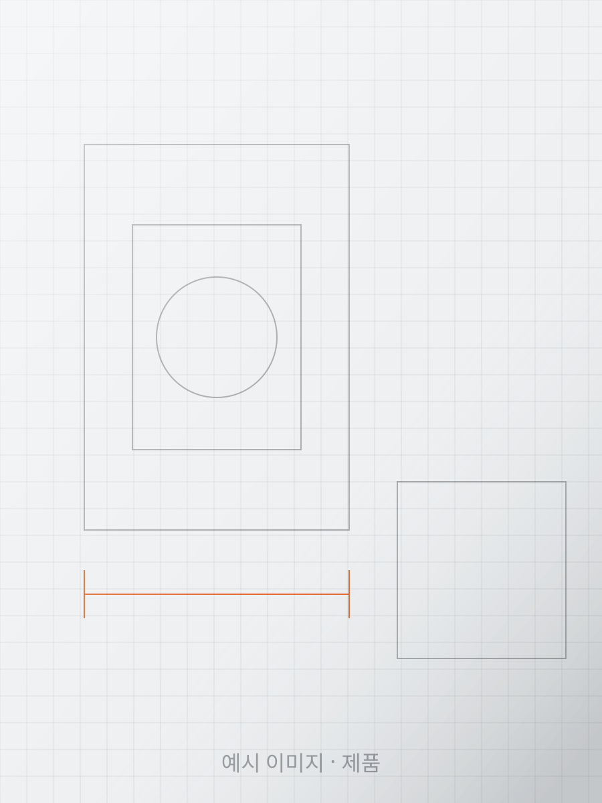
설계 · 도면 작업
-
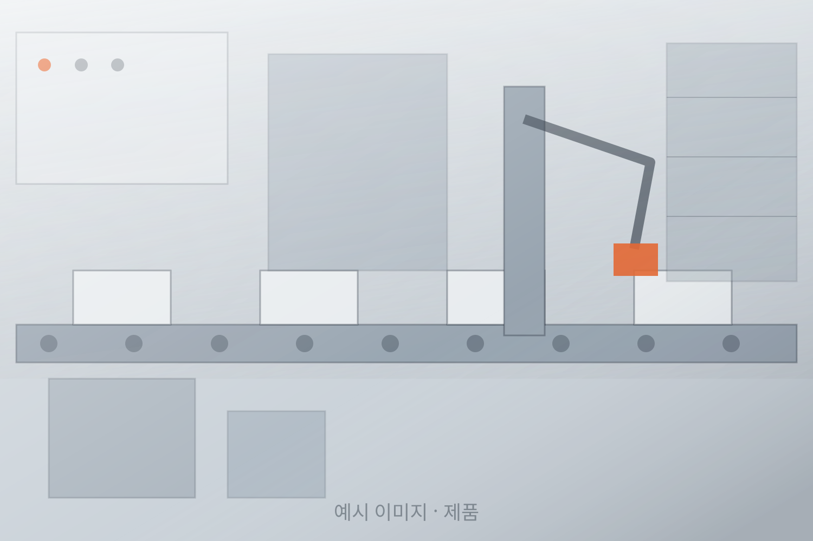
이송 · 반송 장치
-
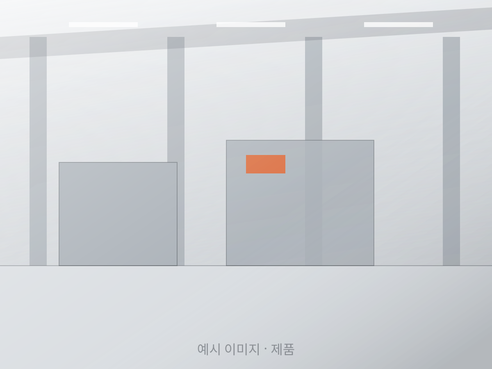
조립 · 시운전 공간
REFERENCES
수행 사례
비밀유지 계약에 따라 발주처명은 표기하지 않고 프로젝트 유형으로만 적습니다.
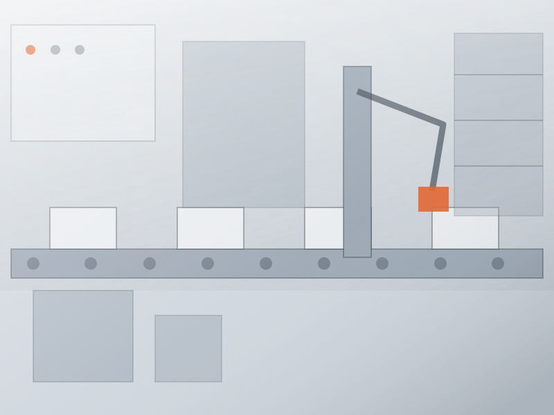
조립 라인 자동 투입 설비수작업 투입 공정을 로봇 투입으로 전환 설계 · 제작 · 설치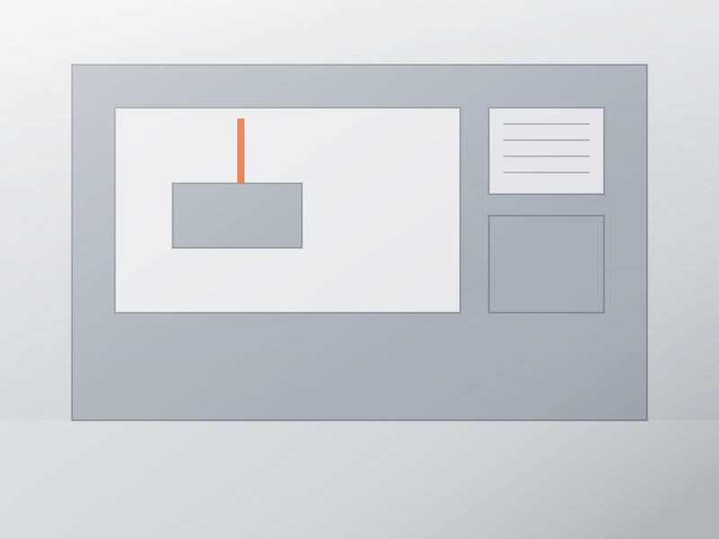
포장 공정 자동화계량부터 박스 적재까지 연속 처리 설계 · 제작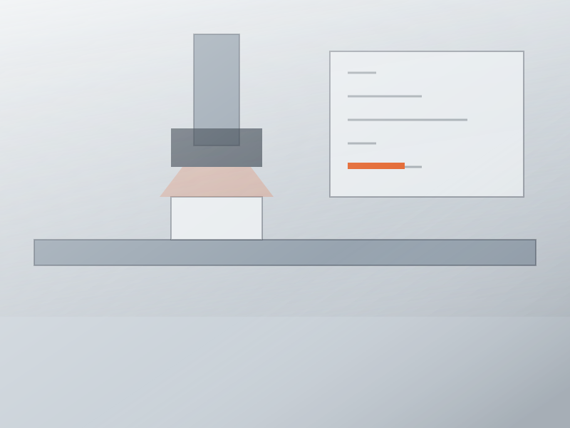
출하 전 외관 검사 시스템카메라 4대로 표면 이물과 치수 동시 확인 비전 · 제어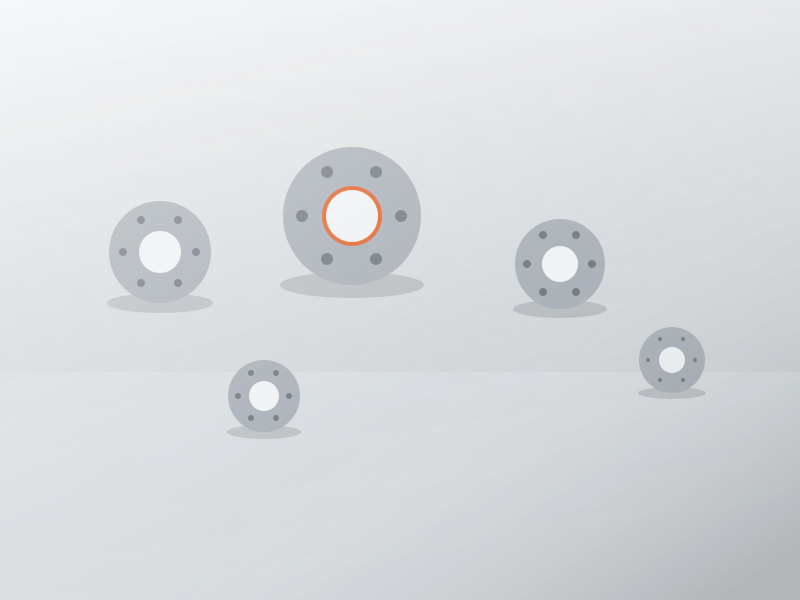
정밀 기구 부품 양산 가공장비사 도면 기준 기구 부품 반복 납품 가공 · 납품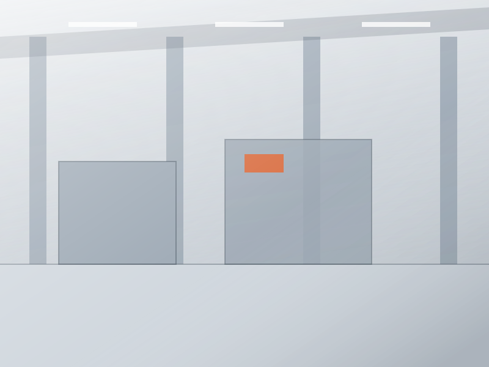
물류센터 분류 설비 개선기존 컨베이어 속도 개선과 제어 교체 개선 · 제어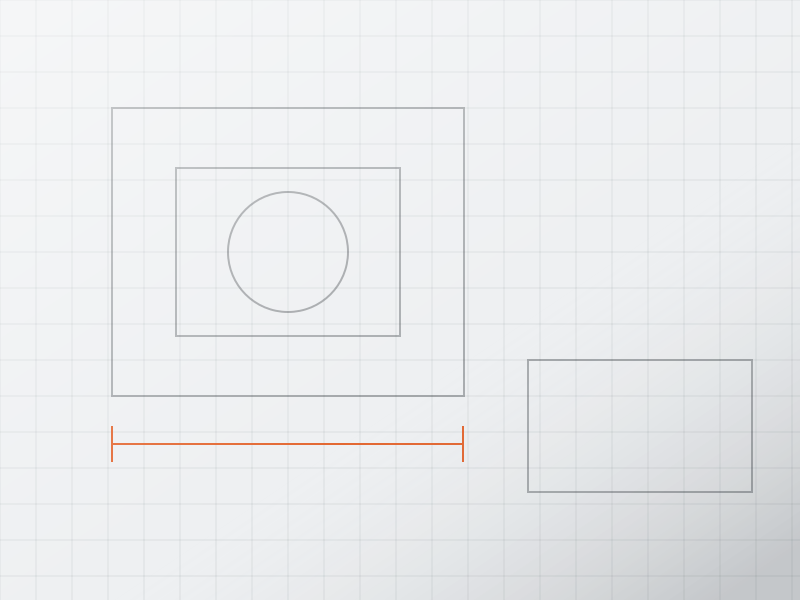
치공구 설계 · 제작다품종 대응을 위한 교체형 지그 구성 설계 · 제작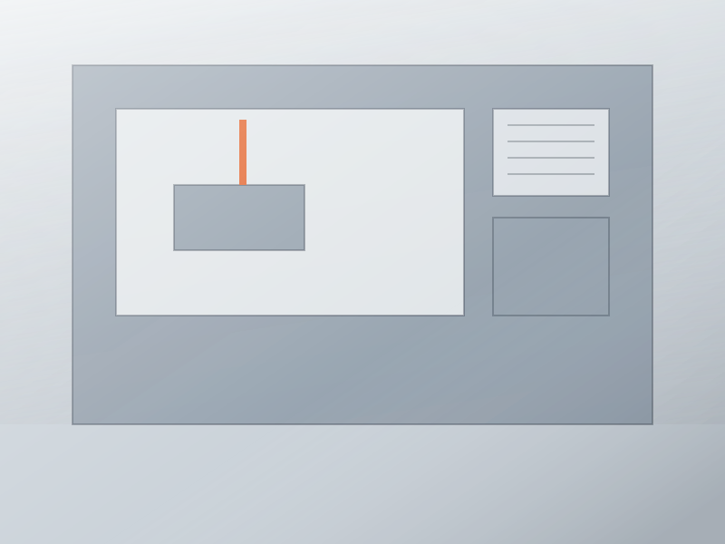
노후 설비 제어 교체단종된 제어반을 현행 부품으로 재구성 유지보수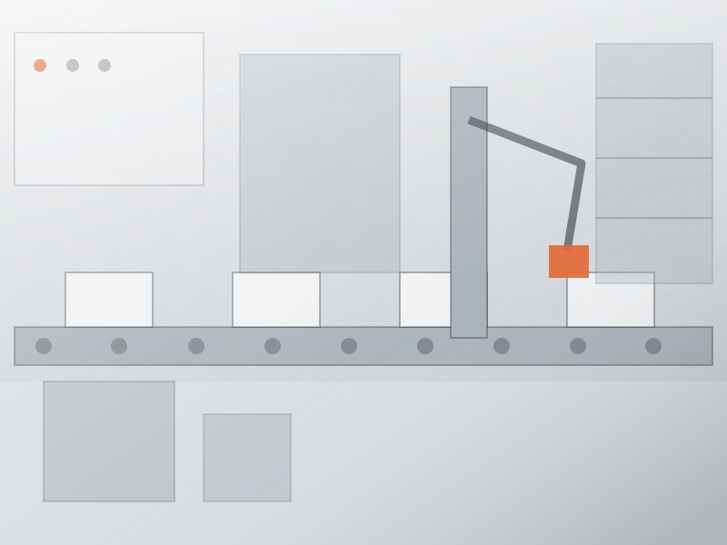
소형 조립 셀 제작1인 작업 셀을 반자동 셀로 전환 설계 · 제작WORKFLOW
진행 절차
-
01
문의
필요한 것과 수량, 일정만 알려 주시면 가능 여부를 먼저 회신드립니다.
1영업일
-
02
요구사항 확인
현장을 방문해 공정과 설치 공간, 기존 설비 연계를 확인합니다.
-
03
제안 · 견적
구성안과 예상 사이클 타임, 금액과 일정을 문서로 드립니다.
-
04
설계
기구와 제어 설계를 진행하고 중간 도면을 확인받습니다.
-
05
제작 · 시운전
제작 후 조립 상태로 시운전하고 조건을 기록합니다.
-
06
납품 · 사후 대응
설치와 인수 시운전을 거쳐 도면과 제어 소스를 함께 드립니다.
COMPANY
회사 소개
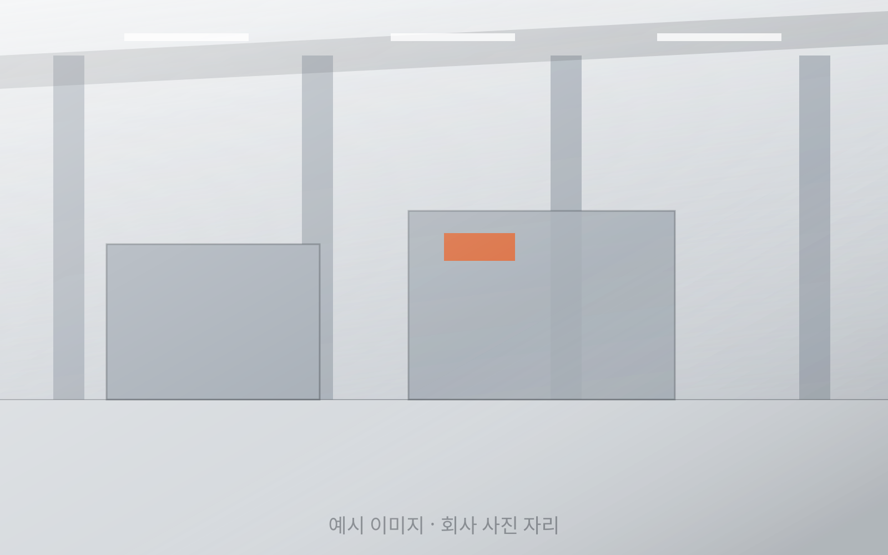
브릭온테크는 산업 현장의 자동화 설비를 설계하고 만드는 회사입니다.
저희가 가장 경계하는 것은 필요 이상으로 큰 설비입니다. 라인 전체를 새로 짜는 제안은 금액이 커지고 일정이 길어지지만, 정작 현장에서 사람을 묶어 두는 공정은 한두 군데인 경우가 많습니다. 그 자리를 먼저 찾아 바꾸는 것이 저희 일의 시작입니다.
설계와 제작을 나누지 않기 때문에 도면과 실제 설비가 어긋나지 않습니다. 납품 이후에도 같은 담당자가 이어서 대응하고, 도면과 제어 소스는 고객사에 함께 드립니다.
대표 윤재석
회사 개요
- 상호
- 브릭온테크 (BRICKON TECH Co., Ltd.)
- 설립
- 2018년
- 대표
- 윤재석
- 사업 분야
- 자동화 설비 · 정밀 가공 · 비전 검사
- 소재지
- 충남 아산시 둔포면
- 대응 지역
- 충청 · 수도권 남부
연혁
- 2018법인 설립 · 기구 설계 및 치공구 제작 시작
- 2020자동화 설비 제작으로 사업 확대
- 2022비전 검사 시스템 자체 구성 시작
- 2024아산 제작장 이전 · 설계와 제작 통합 운영
FAQ
자주 묻는 질문
소량 제작도 가능한가요?
가능합니다. 단품과 소량 가공도 받습니다. 다만 수량이 적을수록 단가에서 준비 공수가 차지하는 비중이 커지므로, 도면을 주시면 수량별로 나눠 견적을 드립니다.
견적은 어떻게 진행되나요?
먼저 필요한 것과 수량, 일정을 알려 주시면 가능 여부를 회신드립니다. 그다음 현장을 방문해 공정과 설치 공간을 확인하고, 구성안과 금액·일정을 문서로 드립니다. 현장 방문과 견적서 작성에는 비용을 받지 않습니다.
도면 없이 설계부터 맡길 수 있나요?
가능합니다. 도면이 없으면 현재 라인을 직접 측정해 설계에 반영합니다. 완성 도면은 납품 시 고객사에 함께 드립니다.
납품 지역은 어디까지인가요?
충청권과 수도권 남부는 상시 대응합니다. 그 밖의 지역은 설비 규모와 일정에 따라 가능 여부를 먼저 말씀드립니다.
기존 설비 개선도 가능한가요?
가능합니다. 제작사가 다른 설비도 받습니다. 도면이 남아 있지 않으면 현물을 기준으로 다시 떠서 진행합니다. 단종된 제어 부품은 현행 부품으로 재구성합니다.
상담할 때 어떤 자료가 필요한가요?
공정 사진이나 영상 한두 개면 시작할 수 있습니다. 도면, 목표 사이클 타임, 설치 공간 치수가 있으면 더 정확하게 안내드립니다. 없어도 방문해서 함께 정리합니다.
CONTACT
문의
도면이나 사양서가 없어도 됩니다. 필요한 것과 수량, 일정만 알려 주시면 가능 여부를 먼저 회신드립니다.